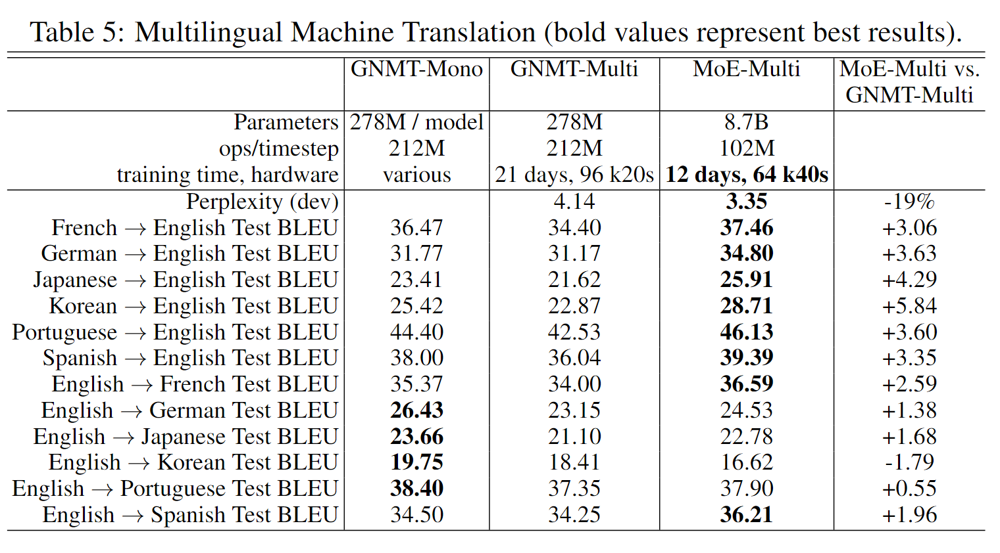

MoE：通过条件计算增加模型容量
摘要
今天来读一篇关于条件计算的论文，《Outrageously Large Neural Networks: The Sparsely-Gated Mixture-of-Experts Layer》，收录于 2017 年 ICLR。神经网络模型的容量（ capacity），例如模型从语料中学习的知识，受限于模型的参数规模。通常，每个样本都要经历到模型所有参数的计算中。增加模型容量意味着成比例的计算性能下降。本文提出了一种条件计算的方法，对每个样本只激活部分参数，可以在不成比例地增加计算量的情况下显着增加模型容量，实现了超过 1000 倍的容量提升，在大型语言建模和机器翻译基准上，这些模型以更低的计算成本实现了新的 SOTA。
具体而言，论文引入了稀疏门控混合专家层（MoE，Sparsely-Gated Mixture-of-Experts Layer），由前馈神经网络和门控网络组成。门控网络用于选择专家的稀疏组合，处理每个输入。网络的所有部分都通过反向传播联合训练。
介绍
正如前文所说，模型的容量受限于参数规模，简单扩大参数会导致训练成本大致呈二次增长。条件计算基于每个样本选择网络的不同部分激活。用于选择的门控决策可以是二元的、稀疏的、连续的、随机的或确定的。各种形式的强化学习和反向传播策略可用于训练门控决策。然而，该方法面临很多的挑战：
- 分支低效：计算设备，尤其 GPU，计算要比分支快得多。熟悉流水线 CPU 的同学应该知道，分支的分支错误惩罚会导致数个时钟周期的停顿，严重影响计算效率
- 批大小受限：条件计算减少了网络条件活动块的 batch size
- 网络带宽（IO）受限：GPU 的计算能力往往是网络带宽的数千倍，嵌入层，也可以看做一种条件计算，往往需要网络发送，这种参数交互受到网络带宽而非计算能力的限制
- 额外损失项：可能需要额外的损失项控制每个样本的网络稀疏程度，在模型负载和质量间做出平衡。
- 大规模数据的依赖。模型容量的扩大需要大规模数据集训练，现有的一些条件计算工作只使用了最多 60w 数据，难以为万亿计参数的模型提供足够的监督信号。
论文提出的稀疏门控专家层 MoE，由许多专家组成，每个专家都是一个简单的前馈神经网络，以及一个可训练的门控网络，该网络选择专家的稀疏组合来处理每个输入。结构图示意如下，其中门控网络从中选择了两个，处理样本。

虽然技术是通用的，但论文主要关注在语言模型、机器翻译任务上，这些任务可以从模型规模受益。基于此，论文在堆叠的 LSTM 层上应用了一个 MoE 卷积，如上图所示。对文本的不同位置调用一次 MoE，选择不同的专家组合。不同的专家组合根据语法和语义变得高度专业化。
MoE 结构
MoE 由一个门控网络 \(G\)、n 个专家网络 \(E_1,E_2,\dots,E_n\) 组成。门控网络的输出是一个 \(n\) 维的向量。每个专家都是一个前馈网络，输入和输出的维度一致。用 \(G(x),E_i(x)\) 分别代表门控网络、第 i 个专家网络的输出，\(x\) 为专家网络的输入。MoE 的输出为专家网络输出的加权和，权重为门控网络对应维度的元素值，公式如下： \[ y=\sum_{i=1}^nG(x)_iE_i(x) \] 稀疏性体现在 \(G(x)\) 上，如果 \(G(x)_i\) 为 0，就不需要计算 \(E_i(x)\) 了。在实验中，有上千个专家网络，但是只需要计算少部分。如果专家的数量过多，可以通过分层 MoE 减少分支。分层 MoE 中，每个专家都是带有自己门控网络的二级专家组合。下面介绍稀疏门控是如何实现的。
Softmax 门控
简单的非稀疏门控可以通过 Softmax 函数实现，公式如下： \[ G_\sigma(x)=Softmax(x\cdot W_g) \]
噪声 Top-k 门控
在 Softmax 门控网络中，添加稀疏性可提高计算效率，添加噪声可以实现负载均衡，随机性使得每个专家都有激活的机会。具体是通过在取 Softmax 函数前，添加可调高斯噪声，然后只保留前 k 个值，其余置 \(-\infty\)，在进行 Softmax 后，对应的门控信号就为 0,。可调高斯噪声，是指标准正态分布的噪声乘以可训练的噪声权重 \(Softplus(x\cdot W_{noise})\)。公式如下： \[ G(x)=Softmax(KeepTopK(H(x),k)) \] \[ H(x)_i=(x\cdot W_g)_i+StandardNorm()\cdot Softplus((x\cdot W_{noise})_i) \] \[ KeepTopK (v,k)_i=\begin {cases} v_i,\ 如果 v_i 是前 k 大的元素 \\ -\infty,\ 其他 \end {cases} \]
训练门控网络
通过简单的反向传播以及模型的其余部分来训练门控网络。如果选择 k > 1，则前 k 个专家的门值相对于门控网络的权重具有非零导数。梯度通过门控网络反向传播到其输入。
解决性能挑战
批大小缩减
大的 batch size 对于计算效率是非常重要的，能够减小参数加载和更新的开销。如果门控网络每次只从专家网络中选择 k 个，每个专家对应的 batch size 会小得多，这会使得参数的更新更为低效。虽然这个问题可以通过暴力加大 batch size 缓解，但这又受限于 GPU 的显存限制。
论文提出了以下两种增加 batch size 的技术：
混合数据并行和模型并行。传统的数据并行分布式训练中，不同设备上的多个模型副本异步处理不同 batch 数据，并通过一组参数服务器同步参数。论文提出同步的数据并行策略，不同设备数据同时组合应用于 MoE 层。模型标准层、门控网络都遵循平常的数据并行设置，不同的是，MoE 的每个专家只保留一份共享副本。每个专家都会收到一个组合批次，该批次包含数据并行中与该专家相关的批次。不同的设备上保存着不同的专家子集。所以这是一种混合数据并行和模型并行的方法。模型并行的设置猜测是为了减少显存开销，大量专家的情况下，每个设备上不激活的专家还是很占显存的。
利用卷积性。MoE 可以类似卷积操作，施加在每层的不同时间步上应用 MoE，相当于增大了 batch size。但对于 RNN 此类网络，其自回归性使得卷积操作无法进行。
网络带宽
分布式计算中另一个主要的性能问题是网络带宽。网络中，专家的输入和输出通过网络发送。为了保持计算效率，专家的计算量与其 IO（输入和输出）的比值必须超过计算设备的计算量与网络容量的比值。对于 GPU，这可能是数千比一。实验中，专家是仅有一个隐藏层的感知机，权重矩阵的大小为 input_size×hidden_size 和 hidden_size×output_size，因此计算与输入和输出的比率等于隐藏层的大小。因此，可以简单地通过使用更大的隐藏层或更多隐藏层来提高计算效率。
其实，也很容易理解，增加内部的计算量当然就相对降低了 IO 开销。
平衡专家利用率
根据论文观察结果，门控网络倾向于为特定的少数专家提供较大的权重。事实上，刚开始受到关注的某些专家会训练地更快，从而会更容易被选择，我愿称其为神经网络的马太效应。为了避免这种情况，论文使用了一种软间隔的方法。定义专家的重要性为 batch 数据中在该专家上的门控值之和。额外损失项 \(L_{importance}\)，定义为重要性的变异系数的平方乘以缩放系数 \(w_{impotance}\)。公式如下： \[ Importance(X)=\sum_{x\in X}G(x) \]
\[ L_{importance}(X)=w_{importance}\cdot CV(Importance(X))^2 \] 变异系数（coefficient of variation，CV），定义为标准差和平均值之比，是概率分布离散程度的归一化度量。当有多个变量进行离散程度比较时，标准差会受到量纲的影响，而变异系数可以消除这种影响。上述损失类似 L2 正则项，倾向于让专家有相同的重要性，但是，专家收到的样本数量可能不同，例如一位专家收到少而权重大的数据，另一个专家收到多而权重小的数据。这会导致分布式硬件出现内存、性能的问题。
为解决上述问题，论文还引入了一个损失 \(L_{load}\)。公式如下： \[ P(x,i)=\Phi(\frac{(x\cdot W_g)_i-kth\_excluding(H(x),k,i)}{Softplus((x\cdot W_{noise})_i)}) \]
\[ Load(X)_i=\sum_{x\in X}P(x,i) \]
\[ L_{load}(X)=w_{load}\cdot CV(Load(X))^2 \]
其中，\(P(x,i)\) 定义为 \(G(x)_i\) 不为 0 的概率，\(kth_excluding(H(x),k,i)\) 为除了第 \(i\) 个元素外，\(H(x)\) 中最大的第 \(k\) 个元素的值，\(\Phi\) 为标准正态分布的概率分布函数。
\(L_{load}\) 粗看可能较难理解，将其转化为下式，其中 \((x\cdot W_g)_{a_k}\) 为第 k 大的门控值。可以看出，上式来自 \(H(x)\) 的计算，\(H(x)\) 中添加了高斯噪声平滑项，\(P(x,i)\) 实际计算得到的是专家 \(i\) 和被选中的权值最小的专家（第 k 个）门控值间的差异，并引入高斯噪声，通过标准正态的 CDF 映射得到选中第 \(i\) 专家的概率。再通过变异系数计算损失，与 \(L_{importance}\) 类似。 \[ P(x,i)=\Phi(\frac{(x\cdot W_g)_i-(x\cdot W_g)_{a_k}}{Softplus((x\cdot W_{noise})_i)}-\epsilon) \]
实验
亿级语言模型
- 数据集：约 8.29 亿 token 的新闻语料，词表约 80w
- 先前 SOTA：若干个堆叠的 LSTM 网络组成，参数从 200w 到 1.51 亿
- 本文模型：两层 LSTM 堆叠，中间有一个 MoE 层，MoE 层的大小、专家数量有所不同（4-4096）。每个专家约 100w 参数，选择的专家数 k=4
为了研究增加容量的效果，论文训练了一系列 MoE 模型，并控制它们的计算成本（约时间步每 800w 次加乘操作，该指标记作 ops/timestap）。
下图展示了该任务上 LSTM 和 MoE 的比较结果。左侧图展示了同样计算成本下，模型的困惑度与参数的关系。基线 LSTM 模型只存在图左上方，少参数而高困惑度。展平的 MoE 与分层 MoE 能在同样参数规模下，获得更低的困惑度。右图为 40 亿参数下，困惑度与计算成本的关系。
下表展示了详细的对比结果，高计算成本的 MoE 能够显著降低困惑度。要注意的是，虽然 MoE 参数最多 30 倍于基础模型，但是每个样本只有 4 个专家处于激活态，这使得模型间的实际激活的参数、计算性能是可比的。

千亿谷歌语料
与上述实验配置、结果相似。不过随着 MoE 层中的参数数量超过 10 亿，增加额外容量似乎会产生递减收益，
单语对机器翻译
WMT'14 翻译数据集，以英法翻译结果为例。此任务使用的模型是 GNMT 模型的修改版本。为了减少计算量，模型的编码器和解码器中的 LSTM 层数分别从 9 层和 8 层减少到 3 层和 2 层。论文在编码器（第 2 层和第 3 层之间）和解码器（第 1 层和第 2 层之间）中都插入了 MoE 层。每个 MoE 层包含多达 2048 位专家，每个专家大约有 200 万个参数，总共为模型添加了大约 80 亿个参数。
多语对翻译
传统方法，使用同一模型进行多语翻译的性能，要差于训练多个模型分别处理单语对翻译。这是由于多个模型提供了更大的模型容量。论文用单一的 MoE 重复了这个实验。MoE 模型在开发集比多语言 GNMT 模型。在 BLEU 得分上，MoE 模型在 12 个语言对中的 11 个上显着击败了多语言 GNMT 模型（高达 5.84 分），甚至在 12 个语言对中的 8 个上击败了单语 GNMT 模型。

总结
这篇论文提出了一种条件计算的方法，并解决了其在实践中遇到的种种挑战（负载均衡、分布式性能等）。在语言模型、机器翻译任务上，证实了其提升模型容量同时保证计算性能的能力。